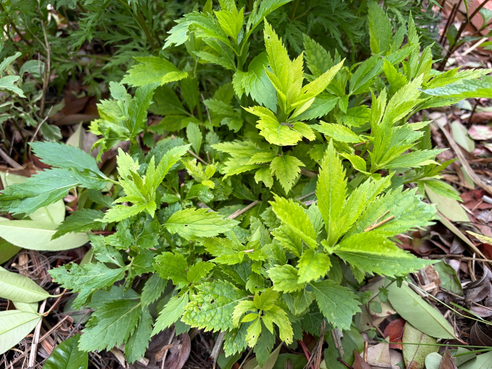

3月には株元から新芽が伸び始め、4月4日には若葉が株元いっぱいに広がっていた白フジバカマ（原種系）。5月6日の写真では、茎がさらに上へ伸び、葉が何段にも重なっています。株元を中心に広がっていた緑が、少しずつ高さを持つようになりました。

Photo © Mama's LIFE NOTE
茎の先には、まだ柔らかそうな明るい緑色の葉が見えます。その下には、ひと回り大きくなった葉が左右に広がり、株全体の葉数も増えています。葉の縁には白フジバカマらしいギザギザがあり、新しい葉と育った葉の大きさの違いからも、今まさに成長が続いている様子が分かります。
一部の葉には小さな穴や傷みも見られますが、写真だけでは原因は分かりません。今後は新しい葉の状態も見ながら、茎と葉がどのように増えていくか記録していきます。昨秋に白い花を咲かせた株が、春には新芽を出し、初夏に向けて葉を茂らせている姿です。
0 件